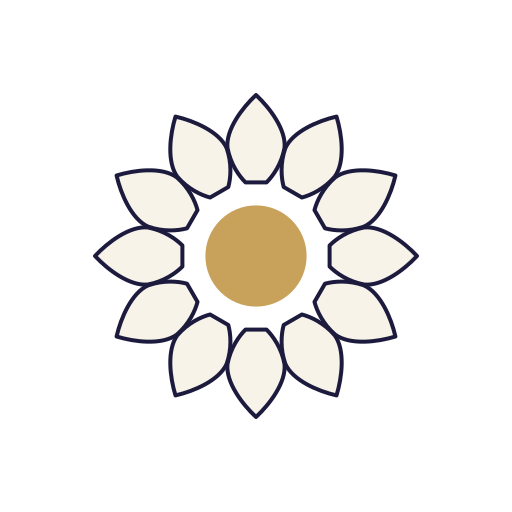
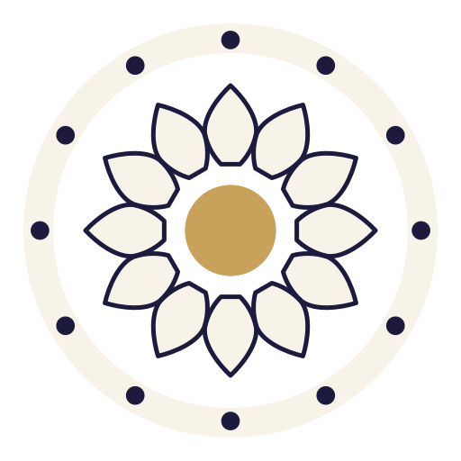

The temple's one idea: the Lord who runs the world is the Lord dwelling in your heart, and He
is transcendental to both. The chosen mark carries that idea as a ladder — the same drawing at three
zooms, the same gold centre at every scale. Zoom all the way in and only He remains. Petal E3
(mukta) · frame shila · nothing designed here that you have not already approved.
THE LORD ALONE Transcendent — beyond the universe He bears. The gold point that is the linga seen from above, the drop of abhisheka, and the dot under the R of RTAM. The favicon, the seal-dot, the smallest mark the brand will ever wear.THE LORD IN THE HEART Immanent — the inner view of the murti: the twelve-petal heart lotus, Anāhata, with the Lord dwelling at its centre. The petals attach without gripping. The community register: avatars, devotee-facing surfaces.THE LORD BEARING THE COSMIC ORDER Sustaining — the top view of the murti: the Ṛta Chakra. The same heart-lotus now seated in the stone rim, the water between them, the twelve Ādityas as windows of light. The Foundation's icon.
THE LORD ALONE Transcendent — beyond the universe He bears. The gold point that is the linga seen from above, the drop of abhisheka, and the dot under the R of RTAM. The favicon, the seal-dot, the smallest mark the brand will ever wear.

THE LORD IN THE HEART Immanent — the inner view of the murti: the twelve-petal heart lotus, Anāhata, with the Lord dwelling at its centre. The petals attach without gripping. The community register: avatars, devotee-facing surfaces.

THE LORD BEARING THE COSMIC ORDER Sustaining — the top view of the murti: the Ṛta Chakra. The same heart-lotus now seated in the stone rim, the water between them, the twelve Ādityas as windows of light. The Foundation's icon.
The fourth reading — the front elevation, the two tiers of 24 tattvas of Prakṛti around
Puruṣa — is deliberately absent from this ladder: it belongs to the consecrated ceremonial register
(certificates, the sanctum itself), to be drawn in Phase 3. The dot under the R in the lockup above and the
centre of every rung are the same point.